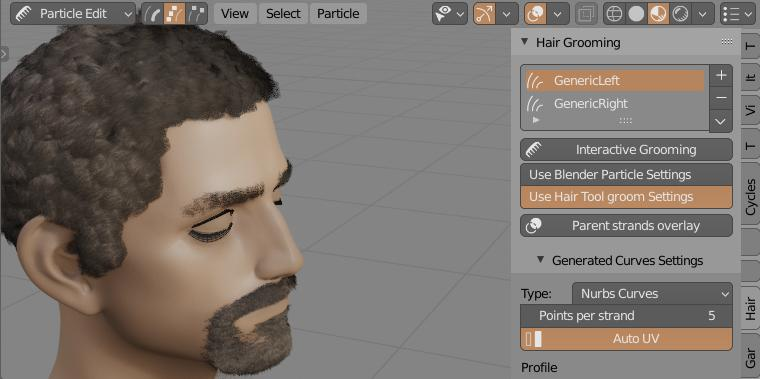
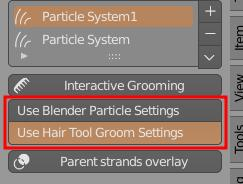
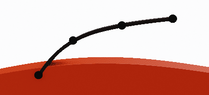
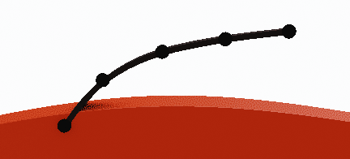
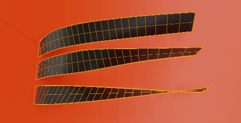
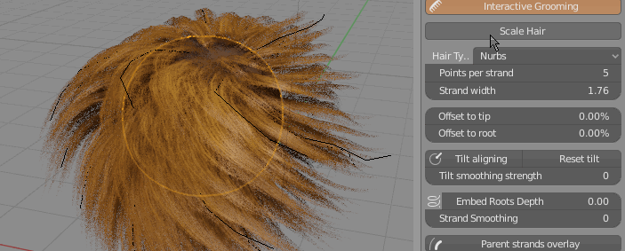
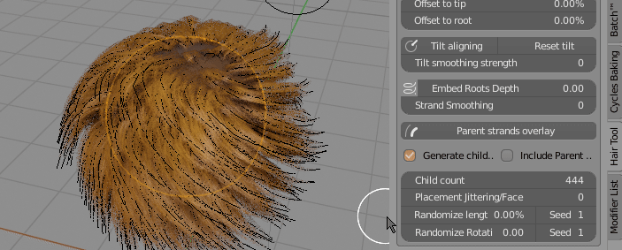
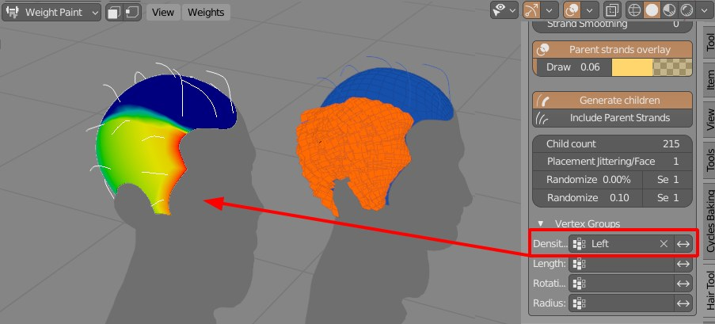

Interactive hair Grooming:¶
Interactive Grooming is best for short, dense hairstyles that cover mesh uniformly (for long hair I recommend 'Curves from grid surface' - it provides easier way guide long hair). Haircards generated with this method will cover whole mesh, but you can mask the influence region with Density vertex group.
Location and Usage¶
To use interactive grooming, you have to be in Particle Edit mode, which in turn requires adding 'Particle Hair' system to selected object with type set to 'Hair'.
To start grooming:
- Open right sidebar in 3D View (N-key) -> go to 'Hair Tool' Tab
- You will see 'Hair Grooming' Panel with list of Particle Hair systems assigned to active object.
- Click 'Interactive Grooming' button to start modeling hair.

Note: Each particle system has its own separate combing settings. This gives you more control over hair look. But if you want you can copy settings from one Groom settings to another using down arrow menu.
Generated strands will be updated as soon as you release your Left Mouse Button. Name of generated ribbons will be the same as particle system name. You can resume work on previously generated hair strands objects, and it will be updated as long as you keep the Particle System name and generated strands object name the same.
Child Comb Settings¶
Hair Tool supports two Child Comb Settings:
- Blender Particle Hair Settings - which supports most of Blender build-in Particle System Children settings
- Hair Tool own Groom Settings - simplified setup, but gives better strand interpolation and more uniform distribution which is importan if you care about poly count

Curve Parameters¶
- Strand width - curve ribbons width
 Points per strand - How many points generate for each spline
 Offset to tip - Move spline points more toward tip
Offset to root - Move spline points more toward root
 Align tilt - Align ribbons tilt to surface
Embed Roots Depth - Embed strands roots into mesh surface
- Strand Smoothing - smooth generated strands (may be slow for dense hair)
Children Settings¶
- Include Parent Strands - Include parent strands when generating hair with children
- Parent strands overlay - Draw orange overlay on top of parent strands, for better visibility on dense hair (Draw Offset controls bias of overlay toward camera)
Child count - Amount of generated children strands
Clumping Amount
Placement Jittering - Randomize child strands placement
Randomize length
 Scale Particle Hair - Change particle hair length (and generated curve ribbons length as a result too)
 Randomize Rotation - Randomize rotation of generated curve ribbons
Vertex Groups:¶
With vertex groups you can control child strands:
- Density
- Length
- Clumping
- Taper
- Rotation randomization
- Radius
 You can use particle system Density mask to control where child strands will be generated
Fixing intersections:¶
Often when you want to make hairstyle with a parting you may encounter problem of child particles intersecting with head on split border line - see image (B) below.

Best way to fix it is to split particle system into two parts - Left and Right:
- select particle hair object -> Ctrl + Shift + H -> Particle hair to curves
- then split generated curves into two objects - Left and Right
- attach Left and Right curve objects to head using - 'Particle hair from Curves', as two separate particle systems.
- create 2 density vertex groups for left and right particle hair system and you are done. You can comb left and right part independently with clean hair parting.